| 作成日 | 2026/07/31 |
| 最終更新日 | 2026/08/10 |
出るので書きます。前回書いたのは蛇の回。
マクロの回は散々だったので今回は書きながら整理して頑張ります。
各日にやったことを整理します。その日の考えをその日に記載するので後ろで訂正が入ることもあります。
とりあえず問題の概要をつかみました。問題文はこちらです。
雑にまとめるとなるべく正方形に近い領域に団体をまとめてあげてねという問題です。
生成方法を確認する習慣もついたので確認します。
Pは2~sqrt(150)の一様乱数の2乗。少ない頻度が高め、急に大人数で来ることもあるくらいでしょうか。
Rは1~100の一様乱数をベースに作成。これは移動のコストにかかります。最大100倍の差になるわけです。いっぱい移動してもいいケースとなるべく移動しない方がいいケースに分かれそうです。でもまだC(集団の外周から計算されるスコア)をどれだけ確保できるか見当はついてないです。
障害物となる池の数は2~256、ただし、2の1~8の乱数乗なので大分偏ります。少ないときとやたら多いときがある、くらいの認識でしょうか。
で、ここから 0 ~ (900-さっきの池の数)の一様乱数で池を成長させます。池がつながらないとはかいてないので池を成長させたら合体することもありそうです。
問題文にもありますが、芝生マスが非連結になるように成長することもあります。
マスの全数が2500なので最大40%が池になるという認識です。
lはポアソン分布をよく理解してないので無視します。
開始時間も一様乱数なので気にしないことにします。
スコアは大体人数と時間の積になるという解釈をします。乱数も入りますが、正規分布なので大きくずれることはないものとします。
最初の目標は「なるべく人数の多いグループを一緒にしてあげて、でかいスコアをでかいままにすること」にします。この目標が変わることはあるのでしょうかね
グループを詰めるあたって、そもそも全グループ詰めると何人になるかを考える必要があるのでimosで人数の概算をしておきましょう。池のマスと池で囲まれたデッドスペースを減算した上で許容可能な範囲を考えましょう。
さしあたっての方針はVが大きなグループをいい感じに配置していくことにします。
lがわかってないのはなかなかしんどいですね。分布のお勉強をせねばならぬ。
持つべき情報量を整理するのを忘れていました。各マスの状態を各時刻で持つとしたら、時間:1e5、マス目:2.5e3なので3e8です。
でかくね？困ってしまいます。
M=1000、最悪のサイズが150として1つ当たり5000滞在すると、7.5e8回の判定が必要です。全然試せませんね。大分困ります。
眠いので今日はここまで。
「本問題はインタラクティブ形式である」
この一文を読んでいなかった。とりあえず入力を作ろうとして入力欄を眺めて初めて気が付きました。Vが大きなグループを優先して受け入れるとかそういう話ではなかった。imosで人数を見積もるとかそういう話でもなかった。lの見積もり必須じゃないですかやだぁ……。
ぱっと思いつく方針はVが大きなグループは広い領域に、Vが小さなグループは端の方に詰めるということでしょうか。
そもそも外周が短くなるように配置する方法も考えないといけません。らせん状に置くとかしか思いつかない。別に普通のBFSでいいのかな? でもそれだと♦になって無駄に枠を使うことにならない？と思って色々試しましたが、変わりませんね。いびつな形にしないのが優先っぽいです。
下の画像なんとなくマスを移動したときに周の長さが変わらないことを考察したときの画像です。
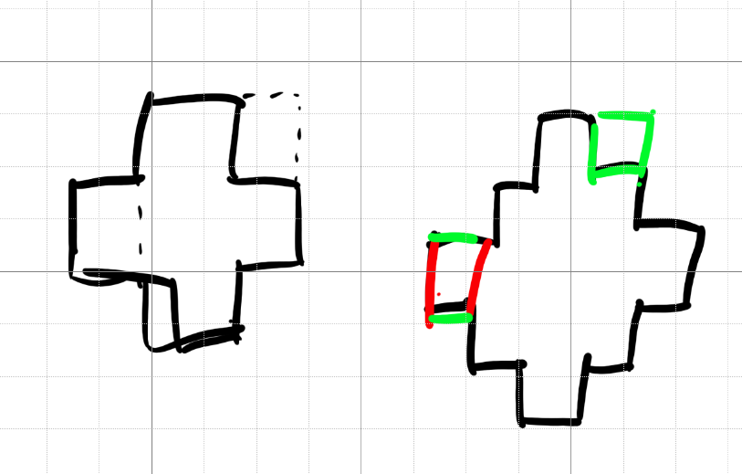
さて、気を取り直して実装を進めます。
ちっともわかってない状態で初提出。TLEでした。
ローカルでやって遅いだけかと思いましたが、普通に遅かった。
全てのマスから毎回BFSをやるようにしたらTLEです。M*N*N*N*Nで何とかなると思ったんですけどね、ダメでした。
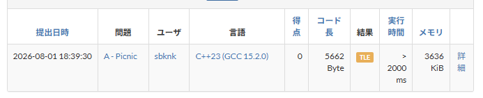
Vが小さいときはなるべく端に近いマス、Vが大きいときは真ん中のマスに置くというルールをうまく評価してあげないと始まらなさそうです。
日が変わったくらいの時間です。なぜかローカルのフィールドとビジュアライザのフィールドが違うのでバグがあります。困ってしまいます。
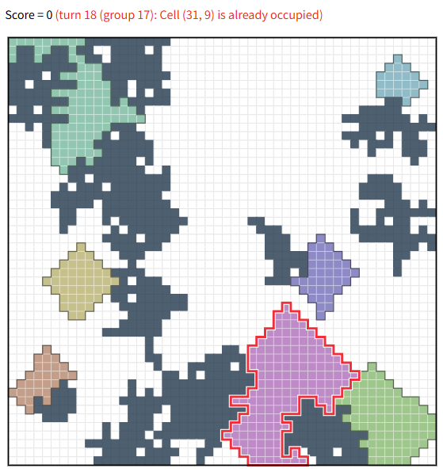
グループのループに使っているループ変数がiだと思っていたらrepマクロでiを重複定義していたせいでした。やはりスコープが広がってきたときの1文字変数は許してはいけません。
インタラクティブなのに最後にまとめて答えを出そうとしたポンをかました後に再度提出。
直前のTLEもこれな気がする。
| 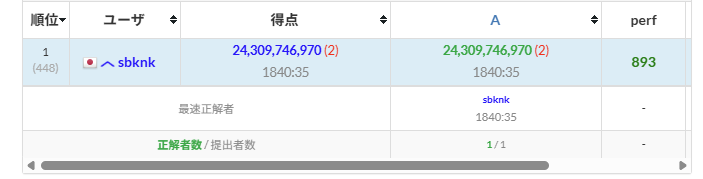 |
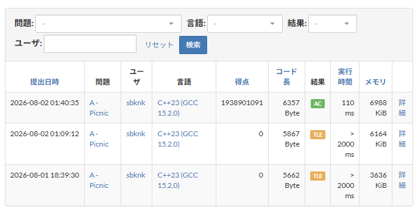 |
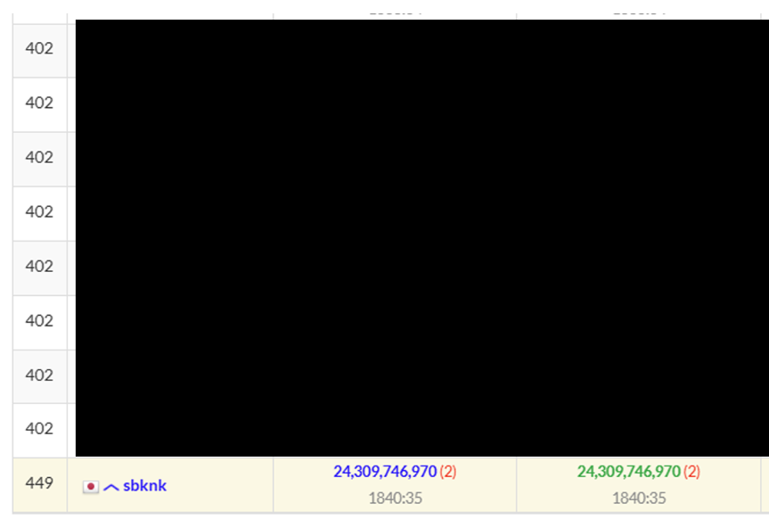 |
やっていることは適当に場所を選んでおけるかどうかチェックしてるだけです。402に集団があることを見るとサンプル以下だと思います。頑張らねば。
ビジュアライザの画像を眺めていたら♦は弱いことに気付きました。
もともとの辺の分を考えるのを忘れていました。移動させたブロックの3辺だけ考えていて、もともとの2辺を忘れてました。早めに気づけて良かった。
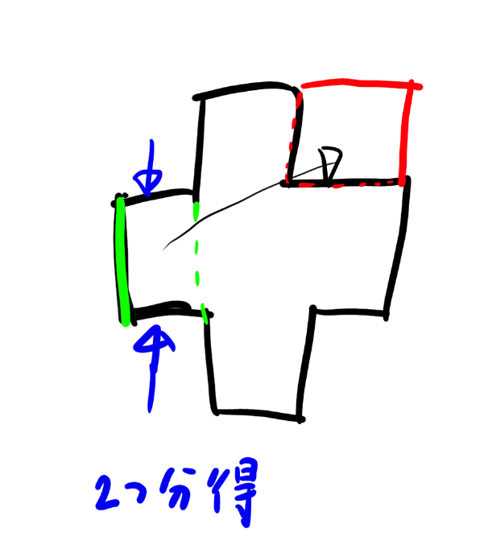
BFSでやると弱いので別の方法を考えます。
ぱっと出るのはこのあたりです。
ついでに小さいグループは端の方に詰めたいです。丸を付けた十字のパーツが真ん中の方に入っているのは無駄です。
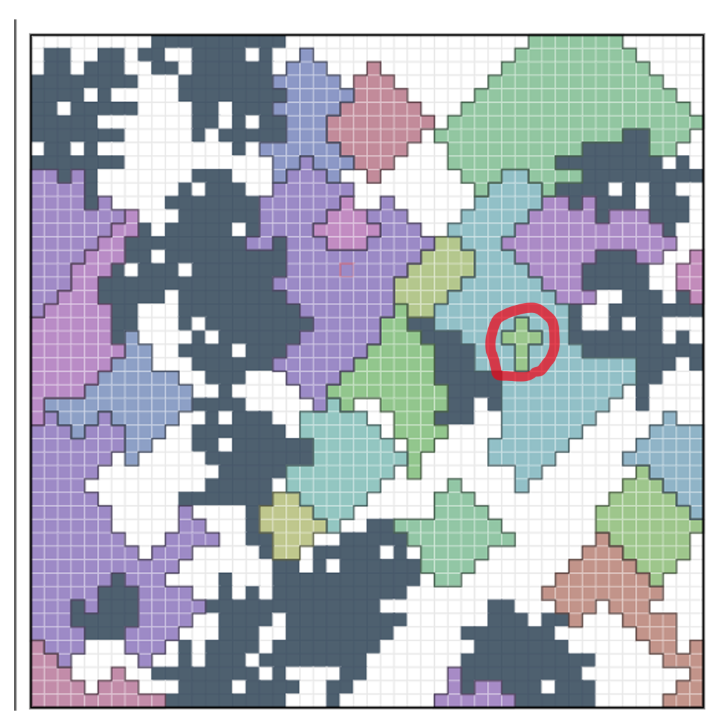
どうにかうまいこと評価したいなと思っていたのですが、1つ試したいことができました。
「あるマスからBFSを始めて、xまたはyの差分がK以下の範囲でたどり着けるマスの数を数える」というものです。こうすると端の方の価値はそもそも探索範囲が狭いので価値が下がり、池で分断されている領域も価値が下がります。
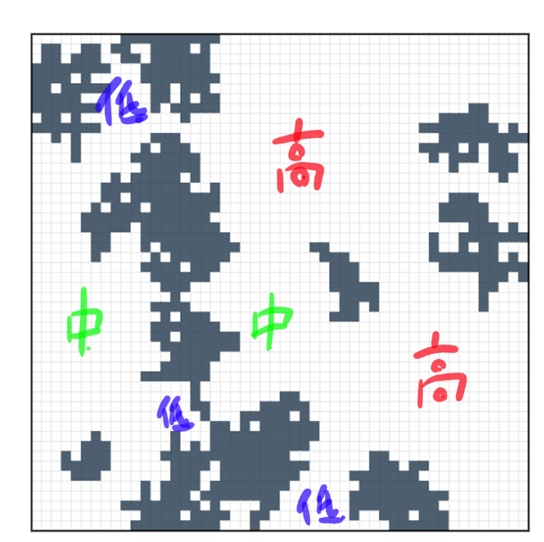
なんとなくこういう評価値が出ると嬉しい。
ということで実装しました。K=10です。たどり着けるマスの数を50で割った余りです。
左上のx=2,y=0が2なのが気になったので縦横の距離だけじゃなくて、実際の移動距離もカウントの指標に入れた方がよさそう。2Kとかにしておきましょう
左が変更前、右が変更後です。どう効いてくるかはわからない。
さっき作った評価値マップとも大分近い気がします。
| 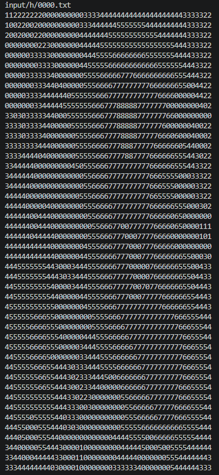 |
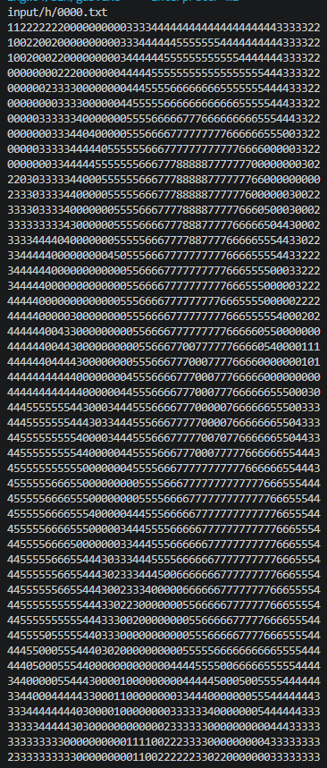 |
このマップで適当に配置してみたんですけど、結果は改善できず、追加の工夫が必要そうです。
今はBFSをしたせいで♦になっているのが問題です。評価マップと同じルールで距離K以下の場合に配置することにしましょう。Kを少しずつ大きくすることで正方形っぽく広げることが可能になります。
このルールで再提出。結果は次の通りです。集団が540位なのでサンプルコードを超えることが出来ました。
| 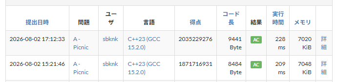 |
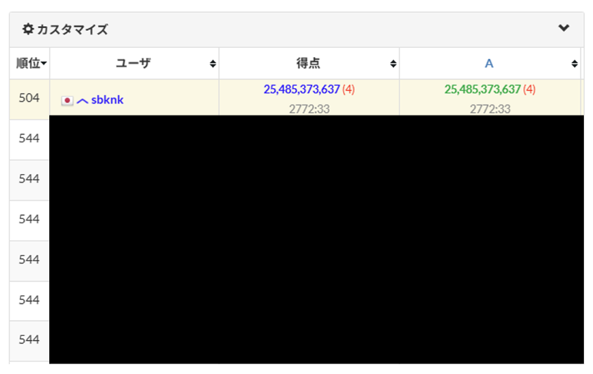 |
vが小さいものはスルーしやすいルールを追加して再提出。微妙に順位が上がっただけです。
適当に埋めるのだと限界を感じました。ということで方針を変えます。
先にサイズごとの割り当てを決めます。その後、その割り当てにグループを詰めることにしましょう。これの実装がすぐにできるとは思えないので頑張りましょう。
各サイズごとにいい感じに配置できる領域を確保しておいてブッキングしないようにする、そのうえで同じサイズで空きがなくって残り時間が短いグループがあれば１つ大きな領域に割り当てる、みたいな。これが出来たらうれしいなと思います。イメージは次の感じ。
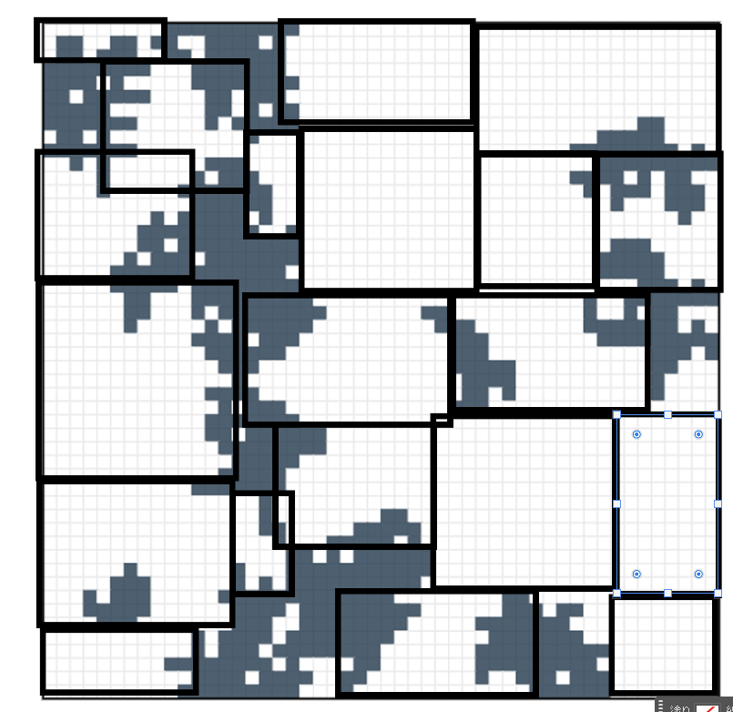
これを作っていて思ったのが重複領域を持っておけばサイズに融通が利きやすくなってなお良しって感じです。
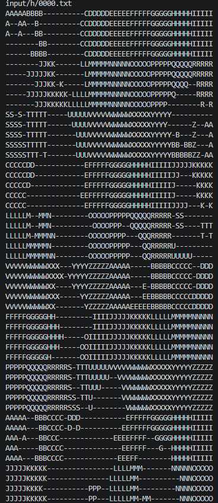
理想と現実は往々にして違うものです。そんなに器用にサイズもよくわからない長方形をいい感じに配置する技術なんてなかった。適当に配置してからスライドするにしても初期解に依存しすぎますし、長方形の重複を許して配置なんてした日にはもう何もわかりません。
ということで諦めて5*5で区切ってみました。あとはこれを適当にマージしていい感じにします。5*5を最悪７個つなげれば150はカバーできる(といいな)と思っているのでこれで行きます。正方形は諦める。
あと、忘れそうなので先にメモっておきますが、各パラメータごとに制限をかけて提出してみるというのをしてみたいですね。強い設定、弱い設定を探したいです。 R毎と池の数枚に出してみたいなとは思ってます。
分けた区画に詰め込むというのをやってみました。
区画の選び方は特に変えずに、グループを詰めるときに各区画に詰めこむ感じにしてみました。
スコアは微伸び、こっちを頑張りたいですね。
| 点数 | 変更後 | 変更前 |
| 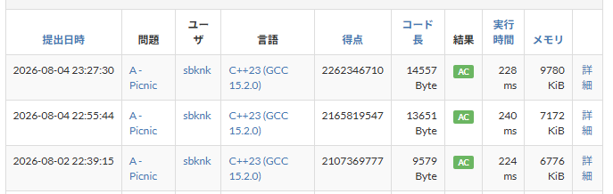 |
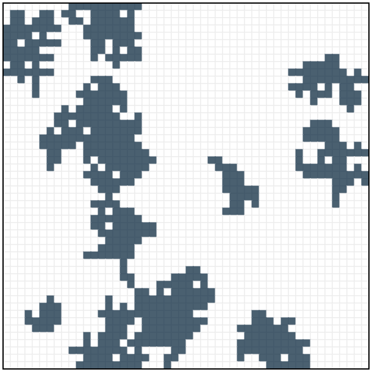 |
明らかに変更後の方ががたがたが減っています。あとは大きな領域が欲しいヤツを広い空間に、小さな領域でいいヤツを狭い空間に……と思ったんですが、そうでもないのかもしれません。
やっぱりVが大きな奴をなるべく正方形にした方がお得だと思いました。すぐに撤退する大人数は端の方にぐちゃぐちゃに詰めて、長くいる少人数を贔屓した方がスコアが伸びることもありそうです。結局Vが大きいグループを正方形にしたいです。で、これを実現するために邪魔なグループを端に追いやってあげればいいのかもしれません。
昨日の夜周囲の長さを出して、10回くらい繰り返して最小になったものを取るというルールで改良したつもりが、最初の一回で止まってました。
幾ばくかパラメータをいじって再提出していたらスコアが伸びました。スコアを伸ばしたヤツは場所に重みづけは一切していません。
| 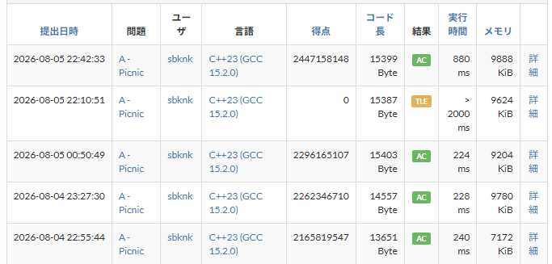 |
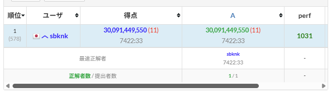 |
30Gに乗りました。点差が意外とついてないので細かな最適化が重要なんですかね。ん～困る。
なんやかんやいじりました。一番大きく変えたのはAreaId、上でいうアルファベットの区分けですが、今までは1つでも使っていたら使用判定にしていましたが、割合で使用判定にしました。 デッドスペースが減ったらうれしいです。
なんだかんだスコアがじりじり伸びています。いい感じ。
ずっとやりたかったケースごとの相対スコアを確認するということ。意気揚々とR<0.5で即returnを作って出しました。
……0.5じゃだめですね。0.05でした。虚無の30分が生まれた。お風呂に入ります……。
| 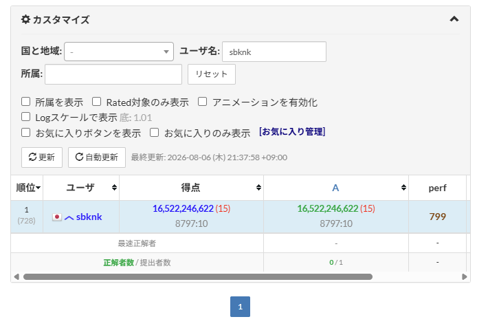 |
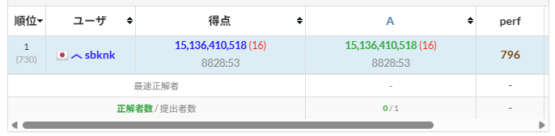 |
2回の提出が終わりました。
左がR≤0.05、右が0.05<Rです。ケースは25でした。ちょうど半分。珍しい。
Rが小さい方が移動の回数が多くて点数が下がるかなと思ってましたが、逆でした。Rが大きい方がうまく移動できるなんてわけがないのでさすがに他の影響を受けていると信じたい。
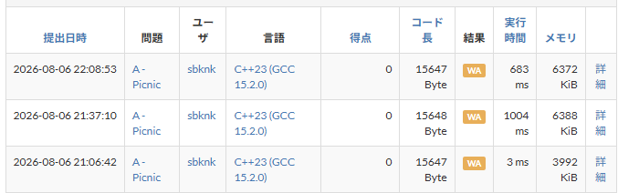
気になっているのは実行時間の差ですね。空いてる場所をいっぱい探すルールにしているので空いている場所がいっぱいあったのかもしれません。
Rがダメなら池の量で分別しようとしようと思ってました、やりましょう。
ただ池の量を見るだけだと正方形にある池と、点在している池の評価が同じになってしまいます。これだと約に立ちません。使えそうな評価を考えないといけません。
フィールド全体を埋めるグループを作ってCを出すとかですかね。単純に池の量で見ても何の特徴も得られない気がします。
有効なマスを4つ以上の芝からなる集合としその芝の数をS、その集合の周囲の長さをLとします。 Lの和/Sの和で比較してみました(多分)。
0.035で分割しました。 0.035以下が21個(左)、超過が29個(右)でした。
| 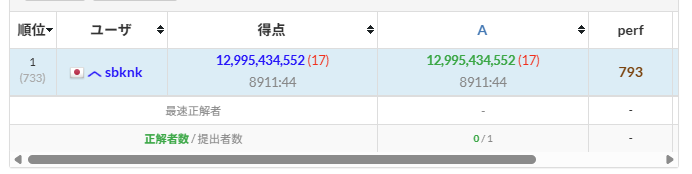 |
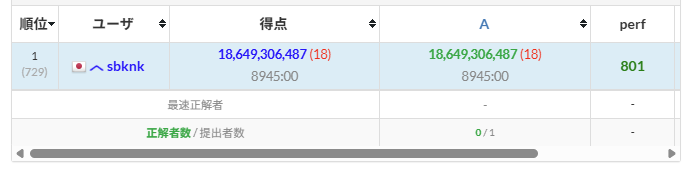 |
左が61.8%、右が64.3%、混んでる方がスコアがよいということになります。意外ですね。
こんなことをしながらパラメータを調整、26に乗りました。スコアじわ伸び。
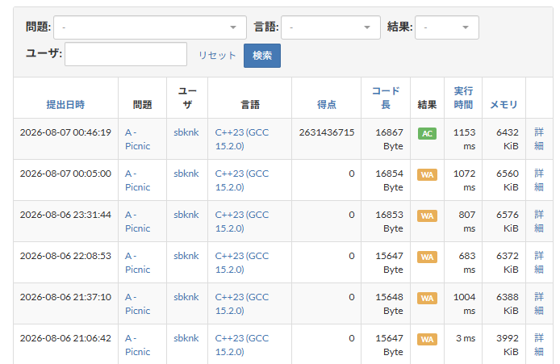
池の分布を評価するためになんとなく評価をしました。これを使って広そうなエリアを探すこともできそうなことに気付きました。
そもそも、もともとの評価があってるか抜粋して確認してみましょう。
| 疎 | 21 | 664 |
| 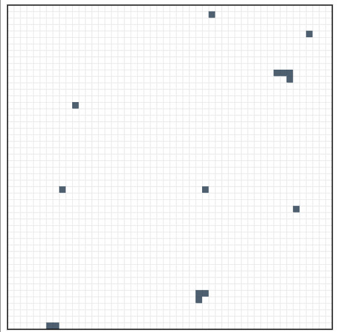 |
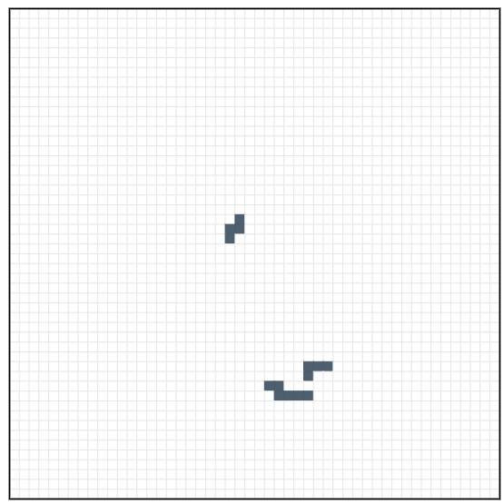 |
|
| 中 | 643 | 214 |
| 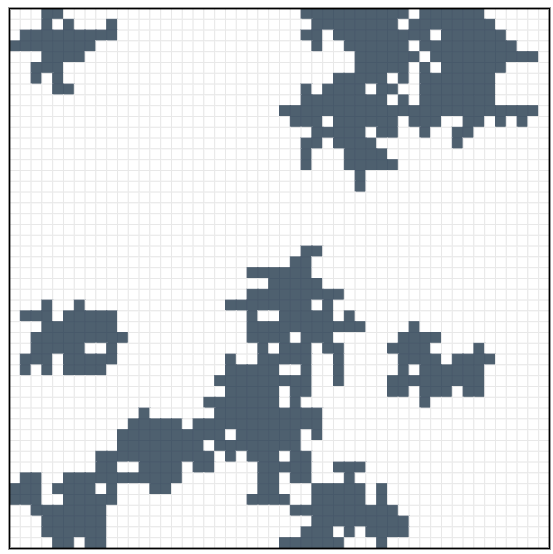 |
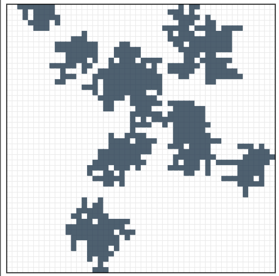 |
|
| 密 | 142 | 27 |
| 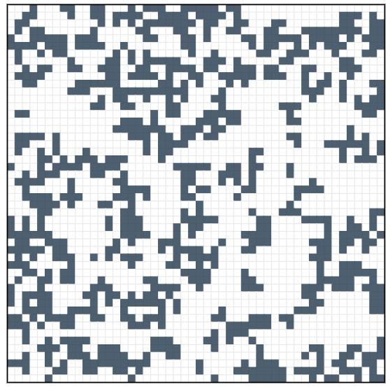 |
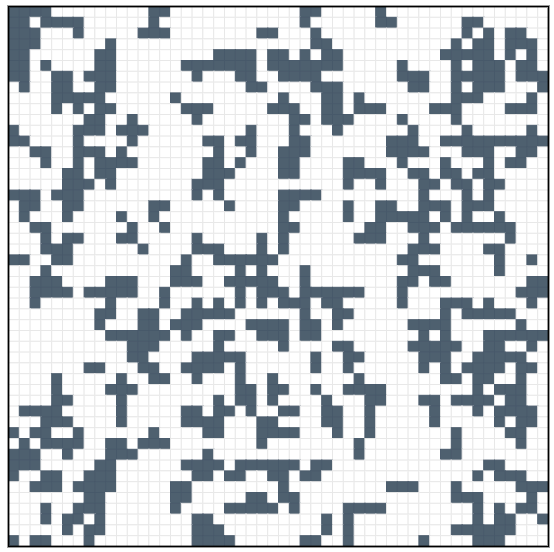 |
有効な芝生マス―芝生マスの周囲の長さでソートして、最初の2つ、真ん中の2つ、最後の2つを出しました。sqrt(芝生マス)/Lだったかもしれない。覚えてない……。スクショも取っちゃったのでそのまま行きます。
すごい！！なんとなくあってる！！！
評価に使っていた値をこれに差し替えてみましょうか。
| 新 | 旧 |
| 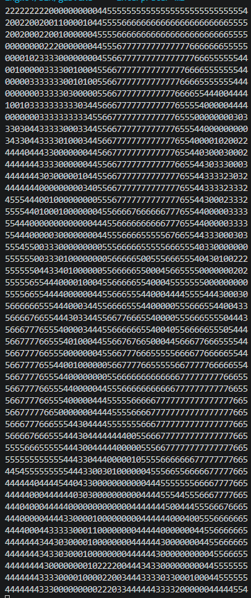 |
最大値、左は7、右は8の位置を見るとより良いように見えます。
サイズが4未満の場所を0にするのを忘れていたのでちょっと変なことになってますが、まあいいでしょう。修正していくらか実行してみます。
何をいじったか忘れました。
とりあえずマスのスコアを出せるようになったのでVが小さい場合は埋めるマスのスコアを最小、Vが大きい場合は周の長さを最小にすることを評価にしてみましょう。ここで、Vの評価はこれまでのスコアの平均のに対する割合としましょう。
これで一回提出、ベストは出ましたが、ビジュアライザを眺めているとまだ制約が弱そうでした。評価に使っていた値をペアにしてvの値によってfirst・secondを入れ替える仕様にして再提出。
| 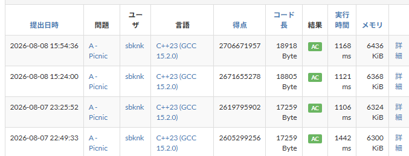 |
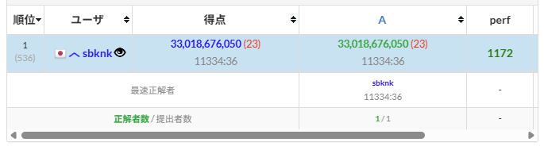 |
スコアはじわじわ伸び続けています。が、上位陣の6割強。そろそろ移動を取り入れたいところです。
が、別にいい案もないんですよね…。「真ん中の方を陣取っている評価値が低いグループを端に追いやる」とか「別のグループを避けるために歪な形になっているグループを、避けたグループがいなくなったからきれいな形にする」とかですかね。これらはどちらも後から来た評価値の高いグループの形をきれいにするための操作です。
でもうまく実装するすべが思いつきません。計算量が爆発しそうですし、特徴の抽出ができる気もしません。
弱いケースを眺めて改善する方法も考えましょう。これも今更ですが。
最初の100件のV和に対するスコアの割合を出しました。
評価がわかりにくかったので0~100に正規化しました。0が悪いフィールド、100がいいフィールドです。
| V和の割合 | seed | フィールドのスコア | V和の割合 | seed | フィールドのスコア | V和の割合 | seed | フィールドのスコア | V和の割合 | seed | フィールドのスコア | |||
| 16 | 11 | 1 | 17 | 9 | 4 | 18 | 96 | 7 | 19 | 84 | 4 | |||
| 19 | 92 | 2 | 20 | 2 | 0 | 20 | 26 | 5 | 21 | 3 | 1 | |||
| 21 | 13 | 11 | 21 | 25 | 0 | 21 | 55 | 2 | 22 | 16 | 9 | |||
| 22 | 47 | 14 | 22 | 82 | 16 | 23 | 19 | 0 | 23 | 60 | 9 | |||
| 24 | 46 | 9 | 24 | 53 | 8 | 24 | 80 | 22 | 26 | 18 | 9 | |||
| 26 | 32 | 29 | 26 | 37 | 28 | 26 | 49 | 14 | 27 | 44 | 5 | |||
| 27 | 95 | 2 | 28 | 24 | 29 | 28 | 34 | 15 | 29 | 27 | 0 | |||
| 29 | 48 | 4 | 29 | 59 | 49 | 30 | 14 | 2 | 30 | 23 | 33 | |||
| 30 | 94 | 7 | 31 | 12 | 36 | 31 | 69 | 12 | 31 | 81 | 2 | |||
| 32 | 72 | 39 | 32 | 76 | 38 | 32 | 77 | 38 | 32 | 90 | 42 | |||
| 33 | 40 | 21 | 33 | 75 | 22 | 34 | 38 | 53 | 34 | 66 | 47 | |||
| 34 | 86 | 64 | 35 | 6 | 15 | 36 | 29 | 28 | 36 | 42 | 16 | |||
| 36 | 62 | 22 | 37 | 15 | 7 | 37 | 83 | 33 | 37 | 87 | 5 | |||
| 37 | 89 | 9 | 38 | 73 | 8 | 38 | 98 | 26 | 39 | 63 | 11 | |||
| 39 | 91 | 5 | 39 | 99 | 21 | 40 | 33 | 42 | 40 | 74 | 5 | |||
| 41 | 52 | 40 | 41 | 67 | 0 | 41 | 71 | 15 | 42 | 30 | 23 | |||
| 42 | 54 | 45 | 42 | 56 | 18 | 43 | 35 | 2 | 43 | 58 | 16 | |||
| 44 | 78 | 52 | 45 | 85 | 49 | 46 | 4 | 32 | 46 | 7 | 12 | |||
| 46 | 39 | 25 | 47 | 5 | 57 | 47 | 50 | 18 | 47 | 68 | 8 | |||
| 49 | 43 | 11 | 49 | 64 | 15 | 50 | 45 | 39 | 51 | 70 | 18 | |||
| 54 | 1 | 42 | 54 | 79 | 49 | 56 | 65 | 54 | 57 | 0 | 19 | |||
| 57 | 10 | 59 | 58 | 31 | 49 | 58 | 61 | 63 | 59 | 51 | 30 | |||
| 60 | 8 | 42 | 60 | 93 | 67 | 61 | 57 | 61 | 62 | 22 | 9 | |||
| 65 | 21 | 100 | 67 | 88 | 45 | 74 | 17 | 74 | 80 | 28 | 35 | |||
| 80 | 41 | 30 | 82 | 97 | 70 | 84 | 20 | 92 | 90 | 36 | 70 |
一番いいのがseed36の90%、一番弱いのがseed11に対する16%でした。
| seed 36 90% | seed 6 36% | seed11 16% |
| 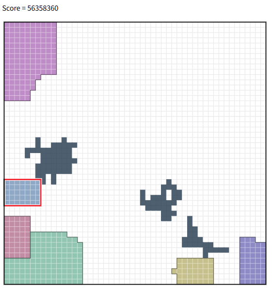 |
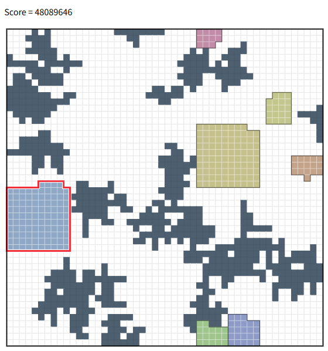 |
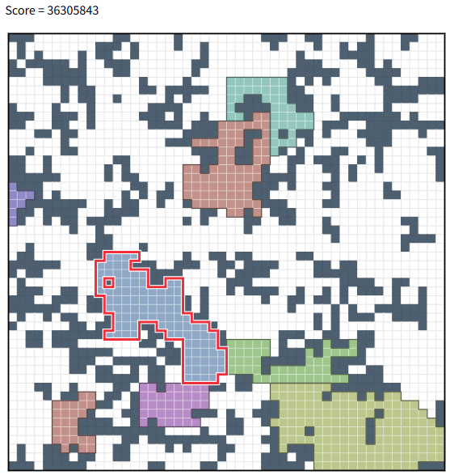 |
おおむねフィールドの良しあしに影響受けてます。
反例になりそうなケースも見ておきましょう
| seed 91 39% | seed 67 41% | seed 22 62% |
| 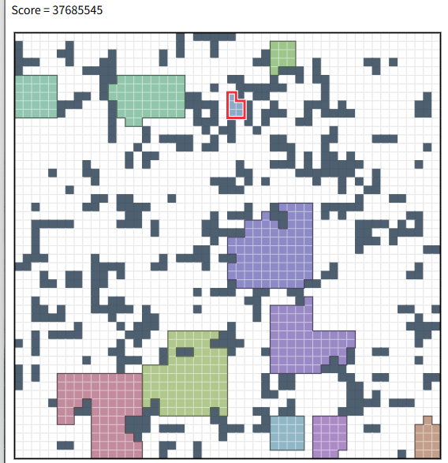 |
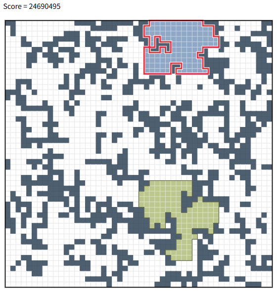 |
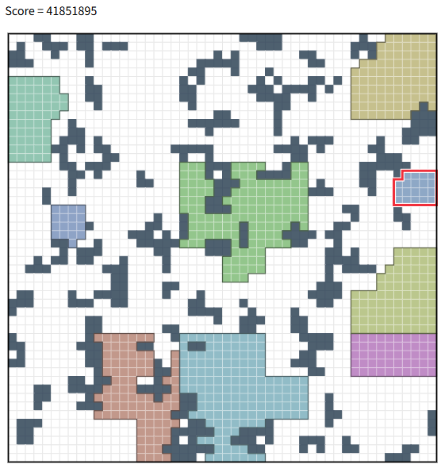 |
ん～なんもわからん。
何もわからんままABCでぼこぼこにされて心が折れました。このまま終了です。
まさかのday10はなし。
まとめるほどの内容はないですね。
スコア自体は伸ばせなかったものの、今までやりたいと思っていたケースごとの分析に挑戦できたのはよかったと思います。
場の分析でなんとなくつかんだ傾向を活かしきれなかったので、活用することが次回の課題でしょうか。
ABCでぼこぼこにされて心が折れたのも問題ですが、最近短期のAHCがある日に予定が重なりすぎて全然出れてないのもよくないです。モチベにつながっていない。次回、8月末のAHCもすでに予定あり。どうしてこんなに間が悪いのか。
アルゴに比べて圧倒的に場数が少ないのでもう少しお勉強を頑張らないといけないなと思いました。
以上簡単ではありますがまとめです。
なんだかんだ記録を書きながら戦うと楽しいのでまた書けたらいいですね。ではまた。